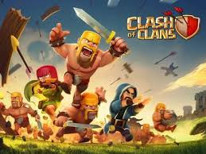
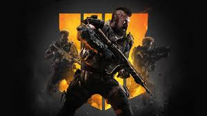
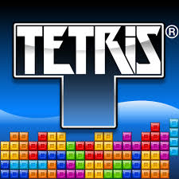

WELCOME TO GAMING HUB
What is gaming?
gaming
Gaming is the running of specialized applications known as electronic games or video games on game consoles like X-box and Playstation or on personal computers (in which case the activity is known as online gaming). The term "gaming" originated as a synonym for "gambling" although most electronic games today do not involve gambling in the traditional sense.
Pong, an electronic version of ping pong, was the first widely played video game. It was simple: you moved a bar up and down to deflect the ball, which your opponent (either the machine or another player) would attempt to deflect on the other side. It became popular in the 1970s. Since then, gaming has grown increasingly complex with enhanced graphics, full-motion video, 3-D effects and high fidelity stereo sound. Specialized input devices such as joysticks and steering wheels enhance the ability of the user to interact with the programs. Games designed for playing offline on individual computers are sold on DVD or Blu-ray media and can be downloaded from the Internet.
Second Life, one of the first massively multiplayer universe (MMU) games, uses a decentralized server architecture to meet the demands of up to several thousand online users simultaneously. In its most sophisticated form, a gaming interface can constitute a form of virtual reality. More recent developments include motion gaming, which responds to the movements of users, and virtual reality headsets, which enable an immersive experience.
Because of historically slow response time in playing games over the Internet, a trend in which gamers convene at a so-called LAN party, bringing their own computers and attaching them to a LAN (local area network) set up especially for the occasion. The increasing prevalence of high-speed Internet connections has made online gaming practical for more people in recent years, however, making LAN parties less common.
Gaming faces criticism by groups who point out that some of the programs have violent, xenophobic, sexually explicit or otherwise objectionable content. Concern has also arisen because some young people seem to become addicted to gaming, spending inordinate amounts of time at the activity.
OUR TOP 5 GAMES
1.Clash of Clans

AN EPIC STRATAGY GAME.Answer the call of the mustache! Join the international fray that is Clash of Clans. Customize your village, build an army and crush your opponents. Like using friendship to strike fear into your enemies? Join a Clan, or establish a Clashing legacy by creating your own. The choice is yours in this millions-strong community of Barbarians.
>
2.Call of duty

Call of Duty is a first-person shooter video game franchise. Starting out in 2003, it first focused on games set in World War II, but over time, the series has seen games set in modern times, the midst of the Cold War, futuristic worlds, and outer space. Infinity Ward was the series' first developer, with Treyarch later becoming the second, creating a two-team development cycle. Sledgehammer Games later became the third developer in the cycle. Activision has served as the publisher for the series since its creation. Several spin-offs and handheld versions of titles have also been made by other developers. The most recent title, Call of Duty: Black Ops 4, was released on October 12, 2018.
3.Super mario

The Super Mario games follow Mario's adventures, typically in the fictional Mushroom Kingdom with Mario as the player character. He is often joined by his brother, Luigi, and occasionally by other members of the Mario cast. As in platform video games, the player runs and jumps across platforms and atop enemies in themed levels. The games have simple plots, typically with Mario rescuing the kidnapped Princess Peach from the primary antagonist, Bowser. The first title in the series, Super Mario Bros., released for the Nintendo Entertainment System (NES) in 1985, established gameplay concepts and elements prevalent in nearly every Super Mario game since. These include a multitude of power-ups and items that give Mario special magic powers such as fireball-throwing and size-changing into giant and miniature sizes.
>
4.Tetris

Tetris (Russian: Тетрис [ˈtɛtrʲɪs]; from "tetromino" and "tennis") is a tile-matching puzzle video game originally designed and programmed by Soviet Russian game designer Alexey Pajitnov (Russian: Алексе́й Леони́дович Па́житнов).[1] The first playable version was completed on June 6, 1984,[2] while he was working for the Dorodnitsyn Computing Centre of the Academy of Science of the Soviet Union in Moscow. He derived its name from the Greek numerical prefix tetra- (all of the game's pieces contain four segments) and tennis, Pajitnov's favorite sport.